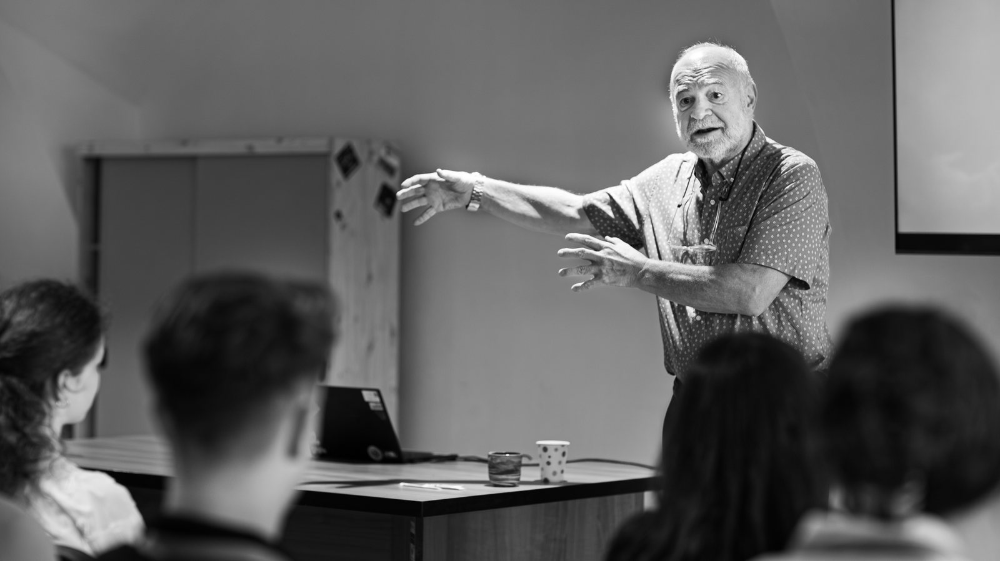
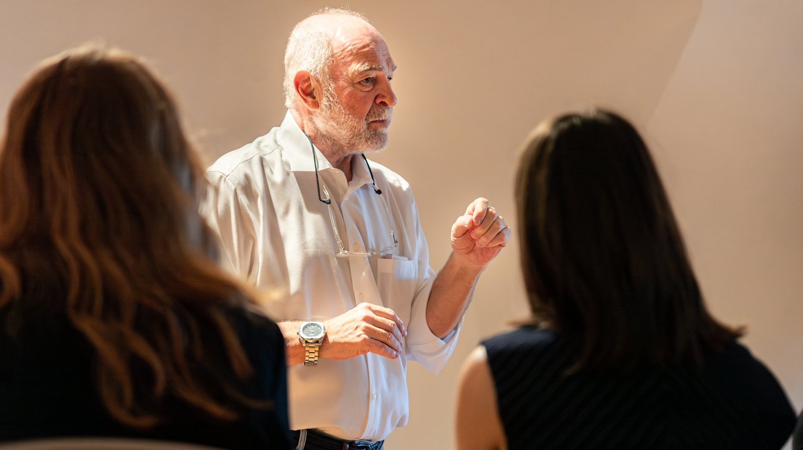

A lifetime of practice — distilled into training that leaders, teams, and institutions can learn from directly.

Over four decades — on winning campaigns, in the Harvard classroom, and in training rooms in more than fifty countries — Steve Jarding developed a new paradigm of professional communication. The areas below are drawn directly from work he has done: the institutions he has trained, the leaders he has advised, and the audiences he has taught.
The core of his work — teaching people at every level, from students to heads of state, to speak with clarity and command a room.
His signature work — teaching leaders and professionals to communicate with clarity, confidence, and authenticity. The method he built at Harvard and refined in more than fifty countries.
Designing and delivering communication training across an entire organization — from senior leadership down through the workforce.
Training for professionals whose success depends on being understood — executives, faculty, and practitioners across fields.
Four decades inside campaigns and governments — strategy, message, and the discipline of leading under real political stakes.
Campaign strategy, message development, and the art of reaching constituencies others overlook — built on a record of winning US Senate and gubernatorial races.
Leadership development and communications training for students, faculty, and emerging leaders.
Communication and strategy training for elected officials, parliamentary staff, and party leadership.
More recent work protecting the integrity of elections and public discourse — countering disinformation and foreign interference.
Building programs to identify, expose, and counter disinformation and online manipulation.
Advising institutions and civil-society groups working to protect free elections and strengthen democratic parties against foreign interference.

These areas can be delivered as executive courses, intensive workshops, seminars, and lectures — for a single leader, a team, or an entire institution. Each engagement is shaped to the group and its goals.
Governments and public institutions · universities and business schools · political campaigns and parties · NGOs and civil-society organizations · corporations and executive teams · professionals across law, medicine, and business.
Programs can be designed for a single leader, a team, or an entire institution.
Start a conversationEverything above reflects two decades of live teaching and advising. The New Paradigm brings that same method to anyone, anywhere, on their own schedule.
Explore The New Paradigm →